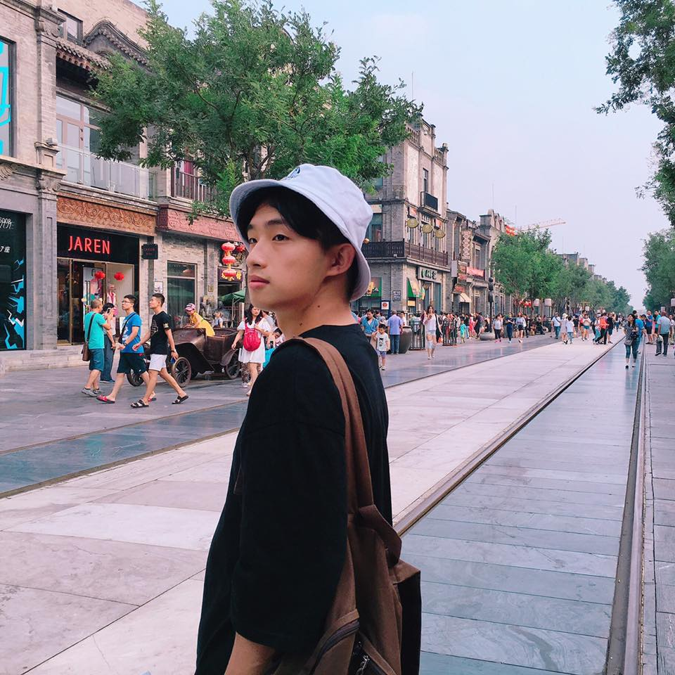
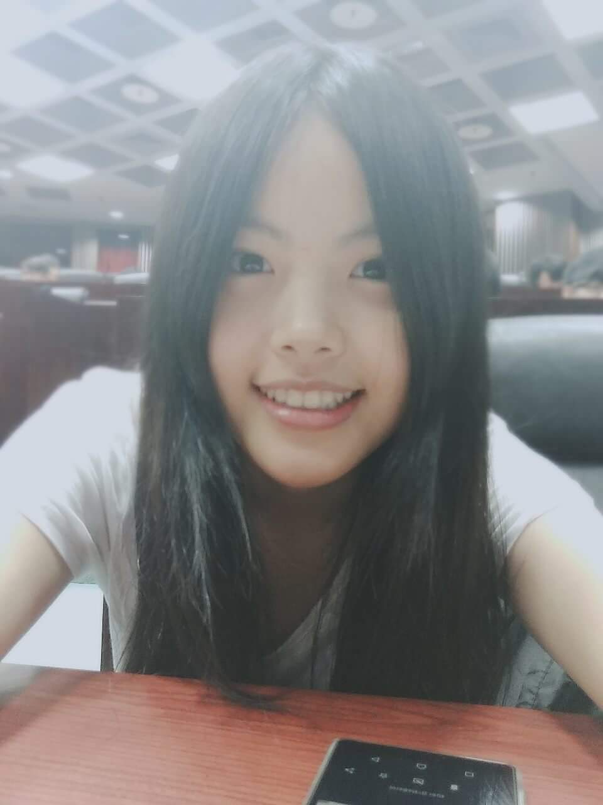
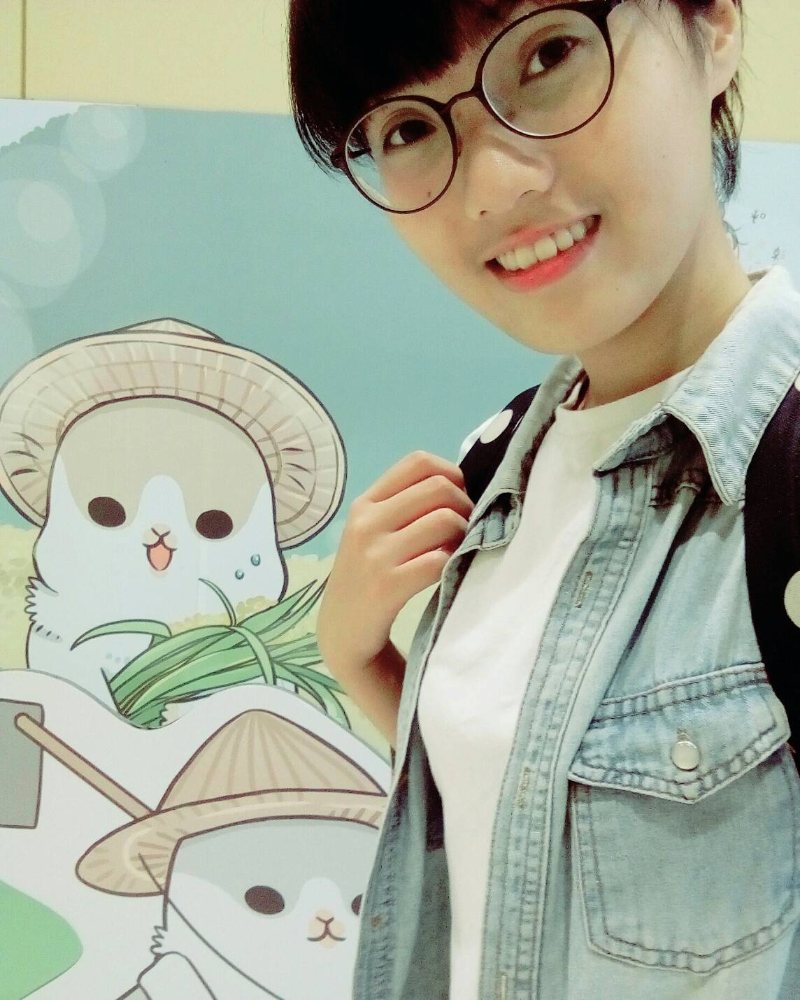
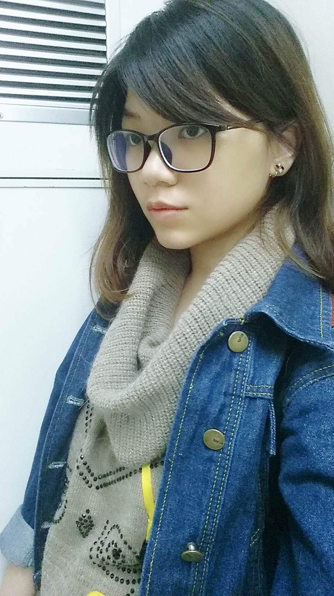

Ｘ
青
年
行
動
日
誌
行
動
夥
伴
故
事
行
動
提
案
牆
活
動
辦
法
關
於
迴
響
最
新
消
息
我們可以怎麼讓「呆丸囡仔」更加貼近年輕人、讓年輕人貼近台語？
點擊揭曉
呆丸囡仔
給這個世代一個俗擱有力的理由
我們的核心訴求是提升年輕人對台語的使用率，做法是以 Youtube 為主要平台，發佈有趣且實用的台語影片（如俚語、常見發音錯誤及菜市場台語買菜等），希望在提供大眾娛樂的同時，也可以學習台語。
同時，我們也會串連粉絲專頁，在頁面上以預告片的方式增加我們 Youtube 影片的觸擊數，一週亦有 2-3 篇圖文，可能與時事有關，也可能是新影片倒數文。藉著影片與圖文雙管齊下，我們希望大家能一點一點地累積台語能力，閒談之間自然地說出台語。
讓我們再多說一些...
這段時間我們持續思考與驗證，該如何讓「呆丸囡仔」更加貼近年輕人、年輕人能更貼近台語呢？我們認為，除了影片中須含教學性提升台語理解力之外，還是要回歸大眾對台語的需求。因此我們採用最生活化的題材，且趣味性高，讓年輕人有使用台語的動力與契機。
另外，我們明白此刻正是打造品牌力的階段，因此如何讓呆丸囡仔持續的曝光並營造好口碑，也是當前相當重要的課題。
議題樹
來看看我們在這議題之中扮演什麼樣的角色！
滑鼠移過揭曉 ▷
行動足跡
來我們的
大本營坐坐
點此前往
9/16
府中綠蓋茶館
三人團隊成立，確立理念
10/8
呆丸工作室（其實是冠名家）
拍攝呆丸囡仔的第一與第二支影片
11/1
文山區 Arty Cafe
粉專圖文小編的招募面談，確定新成員的加入
11/5
板橋國泰市場
團隊挑戰全程台語買菜，第一次與非團隊成員有台語互動
關鍵時點
危機意識？
原本我們認為年輕族群對於台語式微的現象並未產生危機意識、或是對這個語言的存亡表無所謂態度，故在傳承台語的意願上較為低落，但在訪談過後發現，年輕族群是有意識到台語式微這個現象，並有為該現象產生焦慮的感受，然而，年輕族群焦慮的情緒因為整體社會的氛圍，對該問題的關注度與凝聚力並不高，再加上多數人並未有使用台語的需求及場合，使得年輕族群較少有主動傳承台語的行為。
問題點
原先我們認為台語式微的問題點是源自於台語在生活中的使用率低落。然而，在整理訪談之後發現，新一輩的國語母語者在與台語母語者溝通時，並不能全然了解台語母語者表達的意思，而在探討會不會使用的前提之下，應先考量：＂我要理解，才能使用＂的因果性。故我們將最根本的問題點修正為人們對台語的理解度不足，並在日後以提升大眾理解力為影片重心。
大會師
在大會師參與了有史以來最精緻細膩的一場活動，經歷 Action0 不斷反思驗證後，直接引導我們身體力行，促使團隊主動積極度，過程中持續謹記要行動、而非空想，確實體認到用「行動」論證的重要性。BTW 過程中認識形形色色的厲害咖小，對團隊而言是一大助力。
衝刺之夜
感到最不可思議的瞬間：經歷只睡 0.5 ~ 1 小時的衝刺之夜，再面對評審的無言，逐漸開始自我認定不會晉級但已盡力而為所以了無遺憾，全員失智、恍神、精神渙散的狀態下，聽到 No.116 看見台語進入 Action2，一個反轉性衝擊，讓人震驚、感動、喜悅又崩潰的想哭，要繼續努力RRR
自我充實
其實彼此的台語能力也不是極佳，對於各地腔調、國際拼音方式，及口語轉化為注音的形式都在懵懂之間；尤其在編輯粉專圖文時，促音經常被忽略。目前除了充實拍片、剪片能力之外，更重要的是學習台語的專業能力。我們的目標從來不是只有讓觀眾看到有趣的影片，而是能夠著時從中有所獲得的影片。
團隊小故事
最厭世+尷尬的時刻
遭遇的困難
想法的起源
理想中的辦公室
最值得分享的小故事
最厭世 + 尷尬的時刻
最厭世加尷尬的時刻，處理呆丸囡仔時，被學校突然冒出的一堆雜事纏身，在同一時刻還遭受分手打擊，上課時跑出教室外崩潰不想被人知道，殊不知自己哭太大聲，反倒引來大家關注拍拍（喂～不要把我的故事講成第一視角啦 >< ）
想法的起源
遇到的最大困難大概就是團隊成員沒有一個人碰過影片製作，從成立到現在，都是靠自己摸索
理想中的辦公室？為什麼？
在初期討論想做什麼主題時我們提出了很多我們關注的提案。而妙得是，提出台語這個想法的人是我們當中台語最爛的阿名。其實正因為自己台語講得不夠"輪轉"，意識到這個語言與其背後的文化若是在自己這帶產生斷層，會是一件很遺憾的事。團隊的成員們與自身經驗的結合，包括：生活中使用台語的場變少、對台語的語感變得不敏銳等危機意識，決定要利用網路媒體來創造屬於我們這個世代的台語文化，同時藉由計畫的運行更精進自己的台語。
最值得分享的小故事
大面落地窗跟開放式環境（可以順便當室內影片拍攝地點讚讚），一定要有冰箱或零食櫃（因為開會或拍影片都太耗體力，需要靠吃來補充，順便安慰自己疲倦的心靈），有投影螢幕（因為甚麼冠甚麼名的那位成員很愛 TWICE，直接投影 TWICE 上去，可以帶給他滿滿的動力，繼續工作 ^^ ）、有簡易淋浴設備跟棉被（這樣忙到回不了家的時候還有容身之處嗚嗚）
最值得分享的小故事
錄完菜市場特輯後上了迴響的錄影課程，剪好的毛片被打回票建議重新錄製。新手技術不好被打槍很正常，不足以構成殺傷力。讓人鬱悶無比的是處於期中考壓力下，壓縮讀書時間卻做白工的港覺；而且再花時間彌補還會延遲進度，當下整個小組籠罩抑鬱的烏雲。但是大家居然很快就收拾心情，尤其最辛苦的剪片人在一小時的課程內，從「絕不重拍」到決定妥協，和大家達成「重質不重量」的共識，開始討論下一步行動。這算從新成員加入後，第一件最能體現我們團隊特質的小故事；我們無須花費太多心思溝通就能共體時艱。
團隊成員
代表團隊去搭訕別人跟宣傳理念，總而言之是個奇怪又 M 的傳教士（荒表示）（秀補充）（本人表示：喂！我還附帶各種工具人跟美編功能好嗎）。
附帶剪輯功能的行動記事本，最偉大的功能就是幫團隊打各種活動的注意事項。
沒有美感就不用存在的角色，一肩扛起做圖的重責大任，拯救冠名的肝。（這樣好嗎XD）
專業影片台語配音員，閒暇時會當阿秀的司機。

盧冠名

賴怡秀

黃莉芳

呂韋葶
所有人聚在一起為同一個目標努力，說著笑著就想出新點子；這就是我們的 Best Moment！
團隊不為人知的小秘密...
任何人都可以輕易融入的團隊，號稱有超多第五位成員；很愛講幹話的團隊，但靈感就是從這裡來的。
團隊小秘密